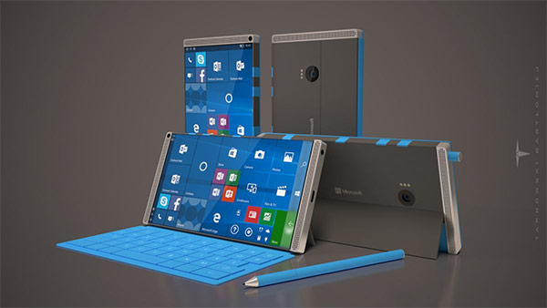

ถือว่าเป็นกล้องถ่ายดาวที่สะดวกสบายมากขึ้นมากๆ เพราะถ้าหากจะถ่ายดาวด้วยกล้อง DSLR เพียงแค่ตัวกล้องอย่างเดียวก็เกินหมื่นห้าขึ้นไปแล้ว แถมยังต้องมีเลนส์ต่างๆที่ราคาแพง สำหรับผู้ที่ชื่นชอบการถ่ายดาวโดยเฉพาะกล้อง NANO1 ก็ดูเป็นทางเลือกที่ดีเลยทีเดียว
นายสืบวงศ์ แก้วสีดำ ปวส.2/1 เลขที่ 25